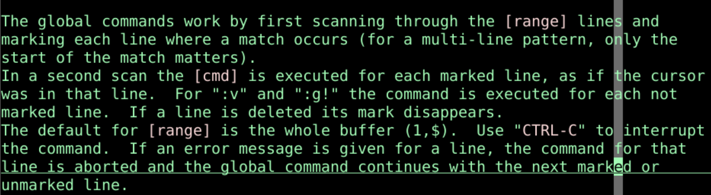
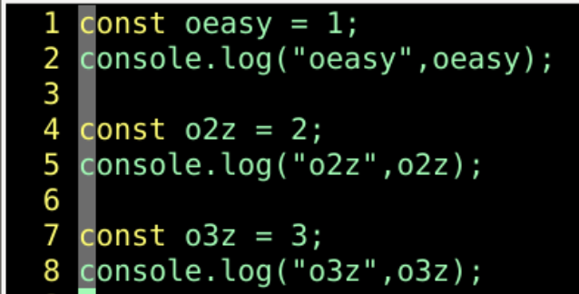
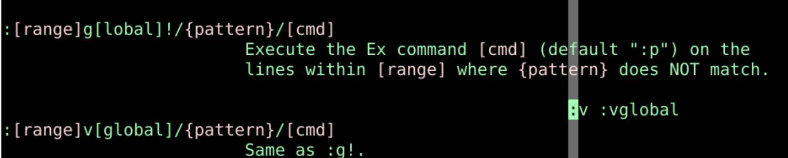
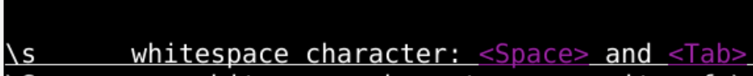
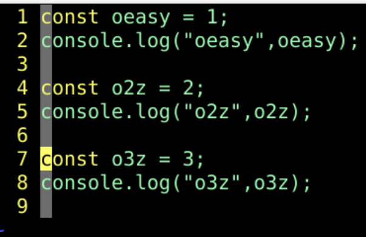
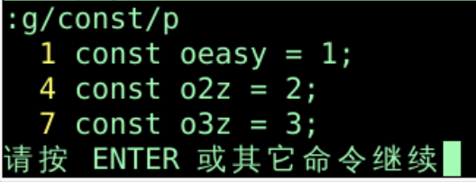

commandargumentrange:h global:[range]global/{pattern}/{command}:1,$
:global:g! 或 :vconst oeasy = 1;
console.log("oeasy: ", oeasy);
const o2z = 2;
console.log("o2z: ", o2z);
const o3z = 3;
console.log("o3z: ", o3z);
:g/console/dconsole的行都删除:g/const/dconst的行都删除:g/console/d _console行之后_ 的意思是将结果放入黑洞寄存器:g/console/d|update|update 进行保存:g@console@d/变成`@``", |, \:g=console=d:g?console?d:g+//+s/oeasy/o1z/g
:g/console/dconsole的行都删除:v/console/dconsole的行都删除:g!/console/dg!和v一样
:g/o2z\|o3z/d:g/[0-9]/d或:g/\d/d:g/^$/d:g/^\s*$/d^$开头结尾之间只有空格和tab
:1,5g/console/d :.,5g/console/d :3,.g/console/d :3g/console/d
特定行
const oneMillion = 1000000;
const oneThousand = 1000;
const one = 1;
:g/0\{3,6\}/d:g/0\{4,6\}/d:g/.*/normal A;.*代表有0到任意多个非空字符^$有0个字符也满足normal A; 每一行都在结尾加分号;:g/./normal A;.代表有一个字符，任意字符都可以^$一个字符都没有，不满足normal A; 在结尾加分号;const oeasy = 1
console.log("oeasy: ", oeasy);
const o2z = 2
console.log("o2z: ", o2z);
const o3z = 3
console.log("o3z: ", o3z);
qaA;<Esc>q:reg a:g/const/normal @aconst const的行normal @a:2,$g/const/normal @a2,$const const的行:normal @aconst oeasy = 1
console.log("oeasy: ", oeasy);
const o2z = 2
console.log("o2z: ", o2z);
const o3z = 3
console.log("o3z: ", o3z);
:g/console/g/two/d:g/console/v/two/d
:g/const/pconst模式的行
:g/^/m 0^ 行的开头，所有的行都符合，包括空行const oeasy = 1
console.log("oeasy: ", oeasy);
// TODO oeasy
const o2z = 2
console.log("o2z: ", o2z);
// TODO o2z
const o3z = 3
console.log("o3z: ", o3z);
// TODO o3z
:g/TODO/t $
:g/TODO/m 0
const arrayA = [
"h",
"b",
"f",
"d",
"e",
"a",
"c",
]
:g/\[/+1,/\]/-1sort:[range]global/{pattern}/{command}